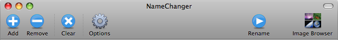

Toolbar
The toolbar houses all the file management buttons along with buttons to spawn the Options and Image Browser dialogs and most importantly the Rename button.

By default the toolbar contains the following buttons:
- Add - Reveals a file dialog that allows the selection of files to add to NameChanger.
- Remove - Removes the selected files from the table.
- Clear - Removes all the files from NameChanger.
- Options - Reveals the Options dialog.
- Rename - Renames the files in the table.
- Image Browser - Reveals the Imager Browser dialog.
Customizing the Toolbar
The
toolbar is also customizable allowing the user to rearrange, add,
remove or respace the items as well as show large or small icons, with
or without text. To access all of these options, right
click on an empty section of the toolbar and select the desired option
from the resulting contextual menu. Clicking Customize Toolbar... from the context menu allows the the user to change the items.